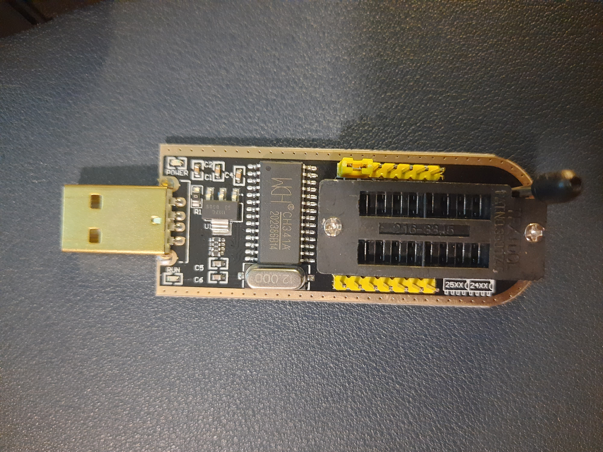
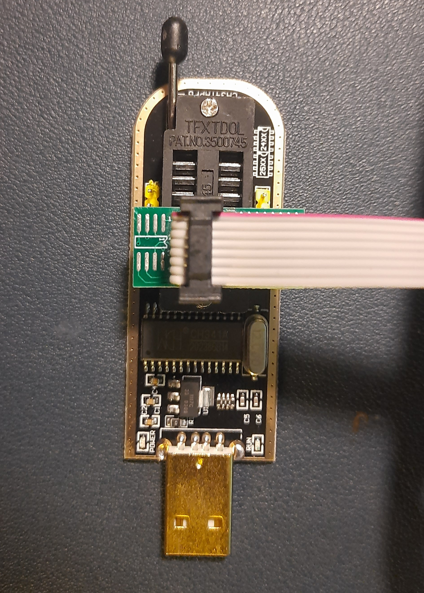
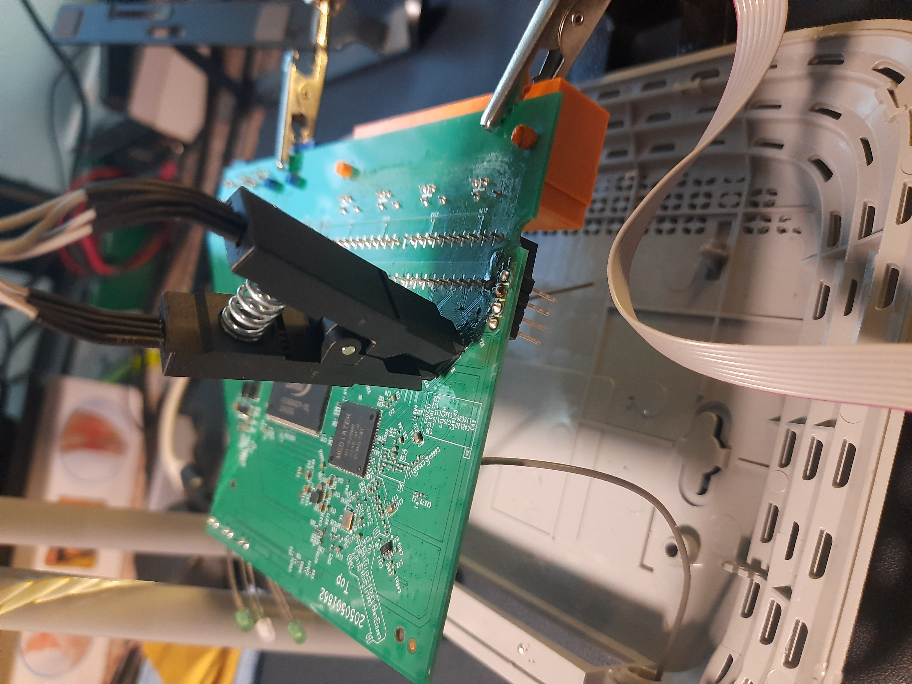
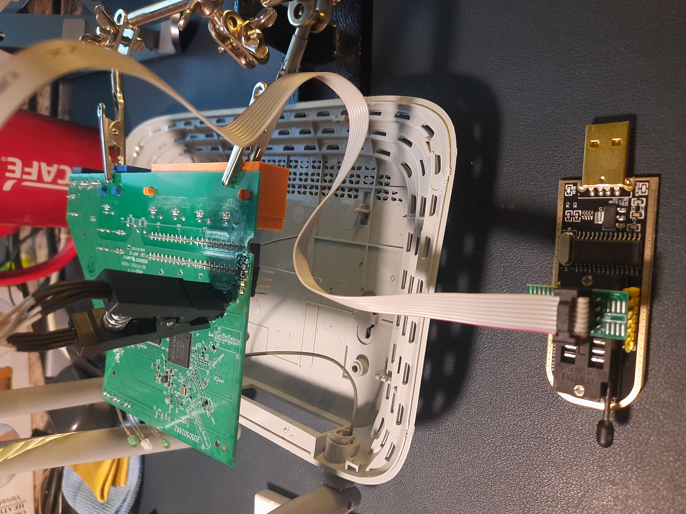

SPI
{% hint style="success" %}
学习与实践 AWS 黑客技术： HackTricks 培训 AWS 红队专家 (ARTE)
HackTricks 培训 AWS 红队专家 (ARTE)
学习与实践 GCP 黑客技术： HackTricks 培训 GCP 红队专家 (GRTE)
HackTricks 培训 GCP 红队专家 (GRTE)
支持 HackTricks
- 查看 订阅计划!
- 加入 💬 Discord 群组 或 Telegram 群组 或 关注 我们的 Twitter 🐦 @hacktricks_live.
- 通过向 HackTricks 和 HackTricks Cloud GitHub 仓库提交 PR 分享黑客技巧。
基本信息
SPI（串行外设接口）是一种同步串行通信协议，用于嵌入式系统中 IC（集成电路）之间的短距离通信。SPI 通信协议利用主从架构，由时钟和芯片选择信号进行协调。主从架构由一个主设备（通常是微处理器）管理外部外设，如 EEPROM、传感器、控制设备等，这些外设被视为从设备。
多个从设备可以连接到一个主设备，但从设备之间不能相互通信。从设备由两个引脚管理，时钟和芯片选择。由于 SPI 是一种同步通信协议，输入和输出引脚遵循时钟信号。芯片选择由主设备用于选择一个从设备并与之交互。当芯片选择为高时，从设备未被选择，而当其为低时，芯片已被选择，主设备将与从设备进行交互。
MOSI（主输出，从输入）和 MISO（主输入，从输出）负责数据的发送和接收。数据通过 MOSI 引脚发送到从设备，同时保持芯片选择为低。输入数据包含指令、内存地址或根据从设备供应商的数据表的数据。在有效输入后，MISO 引脚负责将数据传输到主设备。输出数据在输入结束后的下一个时钟周期发送。MISO 引脚在数据完全传输完毕之前会继续传输，或者主设备将芯片选择引脚设为高（在这种情况下，从设备将停止传输，主设备在下一个时钟周期后将不再接收）。
从 EEPROM 中转储固件
转储固件对于分析固件和发现其中的漏洞非常有用。很多时候，固件在互联网上不可用，或者由于型号、版本等因素的变化而无关紧要。因此，直接从物理设备提取固件可以在寻找威胁时提供特定的帮助。
获取串行控制台可能会有帮助，但很多时候文件是只读的。这限制了分析的进行，原因有很多。例如，发送和接收数据包所需的工具可能不在固件中。因此，提取二进制文件进行逆向工程并不可行。因此，将整个固件转储到系统中并提取二进制文件进行分析会非常有帮助。
此外，在红队行动和获取设备的物理访问权限时，转储固件可以帮助修改文件或注入恶意文件，然后将其重新闪存到内存中，这可能有助于在设备中植入后门。因此，通过固件转储可以解锁许多可能性。
CH341A EEPROM 编程器和读取器
该设备是一个廉价的工具，用于从 EEPROM 中转储固件，并使用固件文件重新闪存。这一直是处理计算机 BIOS 芯片（实际上就是 EEPROM）的热门选择。该设备通过 USB 连接，并需要最少的工具即可开始使用。此外，它通常能快速完成任务，因此在物理设备访问中也很有帮助。

将 EEPROM 存储器与 CH341A 编程器连接，并将设备插入计算机。如果设备未被检测到，请尝试在计算机上安装驱动程序。此外，请确保 EEPROM 以正确的方向连接（通常将 VCC 引脚反向放置到 USB 连接器），否则软件将无法检测到芯片。如有需要，请参考图示：
 
最后，使用 flashrom、G-Flash（GUI）等软件转储固件。G-Flash 是一个快速的最小 GUI 工具，能够自动检测 EEPROM。这在需要快速提取固件时非常有用，而无需过多调整文档。

转储固件后，可以对二进制文件进行分析。可以使用 strings、hexdump、xxd、binwalk 等工具提取有关固件以及整个文件系统的大量信息。
要从固件中提取内容，可以使用 binwalk。Binwalk 分析十六进制签名并识别二进制文件中的文件，并能够提取它们。
binwalk -e <filename>
可以是 .bin 或 .rom，具体取决于使用的工具和配置。
{% hint style="danger" %} 请注意，固件提取是一个精细的过程，需要大量的耐心。任何处理不当都可能导致固件损坏，甚至完全擦除，使设备无法使用。建议在尝试提取固件之前，先研究特定设备。 {% endhint %}
Bus Pirate + flashrom
.png)
请注意，即使 Pirate Bus 的引脚图指示了连接到 SPI 的 MOSI 和 MISO 引脚，但某些 SPI 可能将引脚标记为 DI 和 DO。 MOSI -> DI, MISO -> DO
.png)
在 Windows 或 Linux 上，您可以使用程序 flashrom 来转储闪存的内容，运行类似以下命令：
# In this command we are indicating:
# -VV Verbose
# -c <chip> The chip (if you know it better, if not, don'tindicate it and the program might be able to find it)
# -p <programmer> In this case how to contact th chip via the Bus Pirate
# -r <file> Image to save in the filesystem
flashrom -VV -c "W25Q64.V" -p buspirate_spi:dev=COM3 -r flash_content.img
{% hint style="success" %}
学习与实践 AWS 黑客技术：HackTricks 培训 AWS 红队专家 (ARTE)
学习与实践 GCP 黑客技术：HackTricks 培训 GCP 红队专家 (GRTE)
支持 HackTricks
- 查看 订阅计划!
- 加入 💬 Discord 群组 或 Telegram 群组 或 关注 我们的 Twitter 🐦 @hacktricks_live.
- 通过向 HackTricks 和 HackTricks Cloud GitHub 仓库提交 PR 来分享黑客技巧。